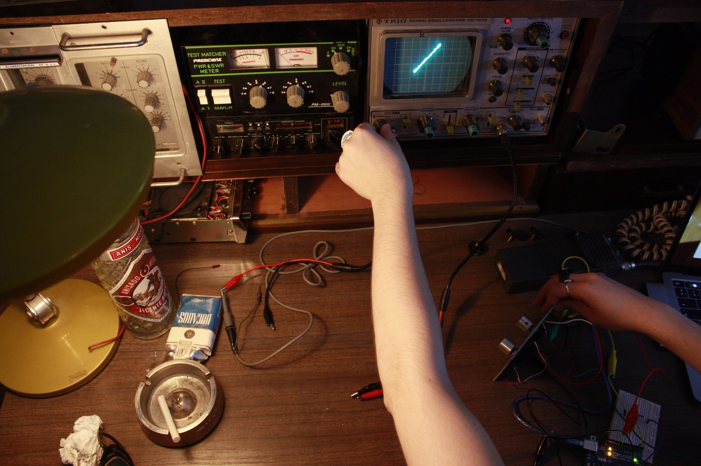

8. Oscilloscope Game
Game design and production for an escape room.We were tasked with creating a tangible game for an Escape Room centered around an Oscilloscope. Our challenge was to modify it so users could interact with it, all within a narrative that aligned with the escape room's storyline.
Given that the escape room revolved around time travel, we conceptualized a game where players had to generate an infinite shape on the oscilloscope's screen to initiate time travel. To achieve this, we integrated three key components: the oscilloscope itself, a fabricated interface for user interaction, and a poster displaying various shapes and codes. Additionally, we incorporated the room's lighting system as part of the gameplay.

The poster, positioned in front of the player, showcased different shapes achievable by adjusting potentiometers on the fake interface we devised. The objective was for players to recreate the infinite shape, symbolizing time travel, which was recurrent throughout the escape room's theme. Upon successfully forming the shape, all room lights would flash, signaling the activation of the time portal.

To realize this concept, we utilized Arduino to generate signals interpreted by the oscilloscope as drawings, as well as to provide an interactive interface with potentiometers. Furthermore, for managing the room's lights, we employed Max MSP.
Lastly, we constructed the entire set to immerse users in the ambiance of a mad scientist's office, facilitating the recording of a demo video.


Game design and production for my “Interactive interfaces” class
3rd year of ELISAVA’s Interaction Design degree, 2023
Project by Gerard Escolies, Samanta Román, Andie Puentes, Victoria Stupai and Marta Pou de Avilés.
3rd year of ELISAVA’s Interaction Design degree, 2023
Project by Gerard Escolies, Samanta Román, Andie Puentes, Victoria Stupai and Marta Pou de Avilés.